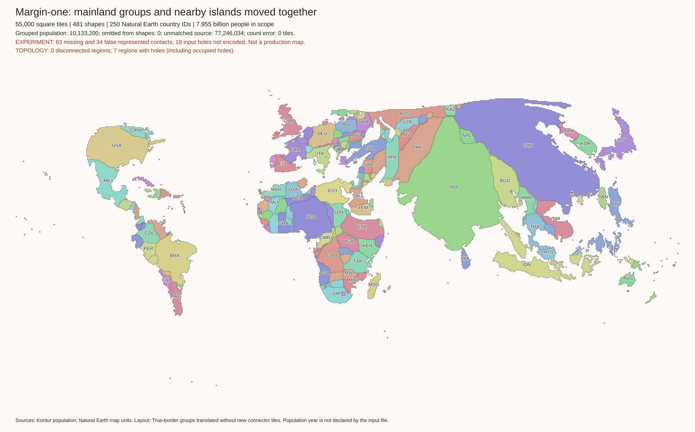
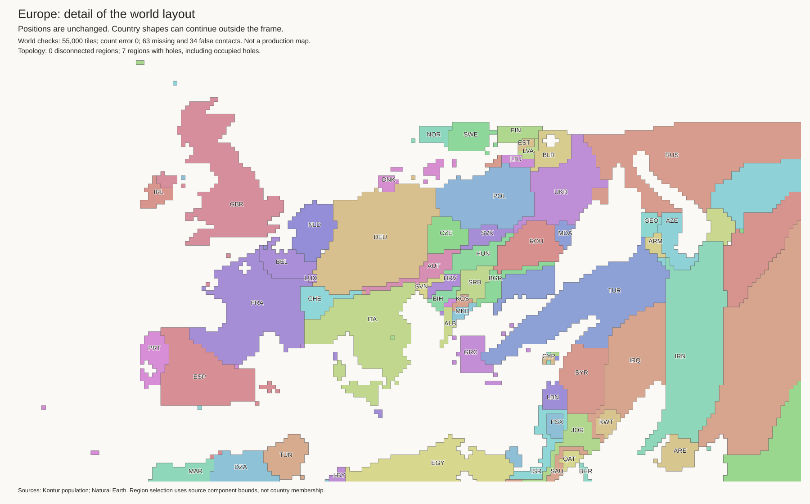
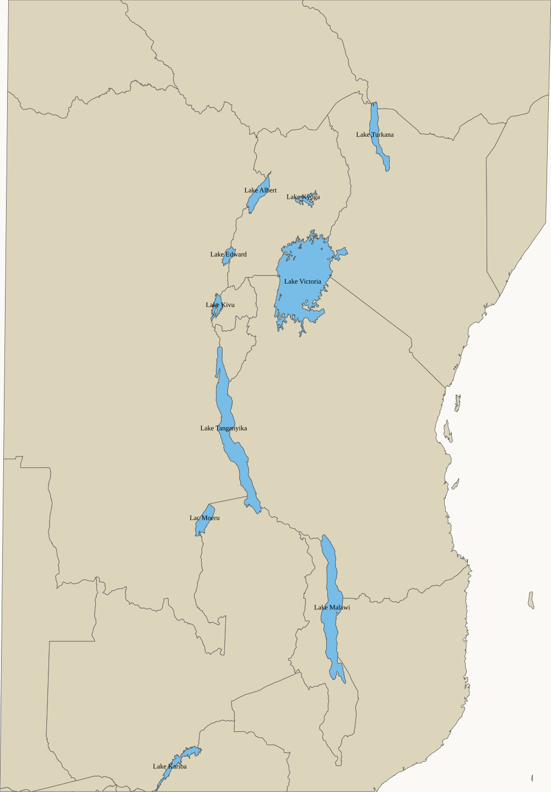
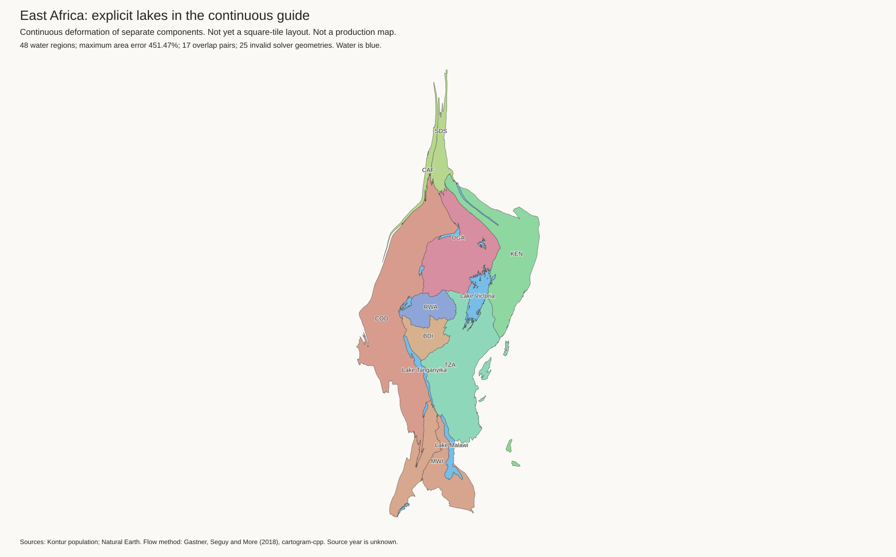

The preferred margin-one layout is the reference. The published population map is unchanged. These are layout candidates, not new population exports.
Work log · Rejoined world image · Island trial world image
Norway/Sweden, Gibraltar, and the Honduras–Nicaragua connection now join the mainland. The method translates existing shapes. It adds no connector tiles and changes no component budget. Nearby islands move with their nearest source coast, not with their country ID.
| Check | Reference | Rejoined candidate |
|---|---|---|
| Land tiles | 55,000 | 55,000 |
| Extra landmass parts | 3 | 0 |
| Missing borders | 66 | 63 |
| False borders | 34 | 34 |

The Baltic gap remains open. Existing narrow shapes and other border errors remain. Europe · South America · Moves and settings · Independent geography audit · Tiles
Ireland moves north. Long Island moves southeast of Manhattan. Japan remains on one side of Korea. But Java is still too far west. Do not treat this as a complete solution to island placement.

New York before · New York after · Indonesia · Japan and Korea · Geography audit · Coast audit
The administrative country polygons cover the full area of Victoria, Tanganyika, Malawi, Superior, Baikal, and Titicaca. These polygons describe territory, not only dry land. Preserving their existing holes cannot restore these lakes.
The audit checks 1,355 Natural Earth lake features. At the current thresholds, 48 lakes receive separate water-guide regions. These use 241 display-area units, while land budgets remain at 55,000. Water has no population budget. Lakes below the thresholds remain in the audit.
DR Congo–Tanzania is a lake border, not a land connection in these inputs. After Lake Tanganyika is subtracted, the source land polygons are separated by about 32 km. A physical-border constraint must not build a land path across that lake.

Source audit and provenance · Selected lake list · Full lake audit · Natural Earth source documentation
The normal solver fails during polygon densification. With simplification and densification disabled, it writes an output, but the independent audit finds 25 invalid geometries and 17 overlap pairs. The maximum relative area error is about 451%. This is not a valid replacement layout.
The diagnostic image uses repaired geometry for inspection only. It is not a square-tile map. The lakes are not yet restored in either 55,000-tile candidate above.
